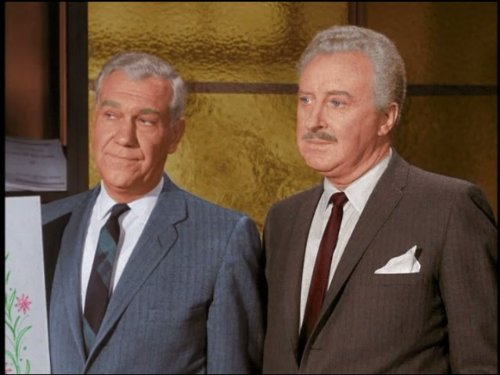
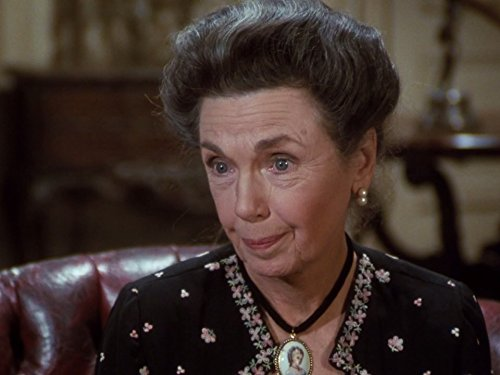
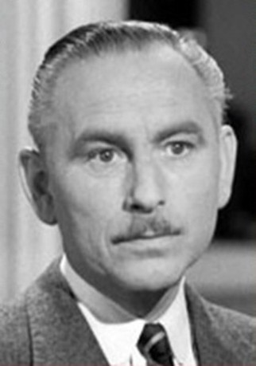
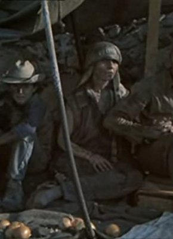

#4994 Der Glückspilz
Alternativ: The Fortune Cookie
Auszeichnungen: 1 Oscars gewonnen für 3 Oscars nominiert


 IMDB-Wertung: 7.4 / 10
IMDB-Wertung: 7.4 / 10  Metascore: 0
Metascore: 0 
Harry Hinkle wird bei einem Football-Spiel verletzt. Sein Schwager und Rechtsanwalt Gingrich sieht darin die Chance zu einem riesigen Schadensersatz und leitet alles in die Wege, um die Versicherung zu hintergehen. Wäre da nicht Boom Boom Jackson, der ehrliche Football-Spieler, der sich mit Harry anfreundet...
Jahr: 1966
Dauer: 120 Minuten
FSK: 12
Land: USA Studio: United ArtistsTonspuren: DD2.0 - ,
Untertitel:
Auflösung: 1080p (1920x1080) Größe: 14438 MB
Genre: Komödie, Liebe
Regisseur:  Billy Wilder
Billy Wilder
Drehbuch: Joe Grant
Soundtrack:
Darsteller:
 Jack Lemmon als Harry Hinkle
Jack Lemmon als Harry Hinkle Walter Matthau als Willie Gingrich
Walter Matthau als Willie Gingrich- Judi West als Sandy Hinkle
- Cliff Osmond als Purkey
- Lurene Tuttle als Mother Hinkle
-  Harry Holcombe als O'Brien
- Les Tremayne als Thompson
- Ann Shoemaker als Sister Veronica
 Ned Glass als Doc Schindler
Ned Glass als Doc Schindler Sig Ruman als Professor Winterhalter
Sig Ruman als Professor Winterhalter Howard McNear als Mr. Cimoli
Howard McNear als Mr. Cimoli- William Christopher als Intern
- Bartlett Robinson als Specialist #1
- Herbie Faye als Maury, the Equipment Man
-  Helen Kleeb als The Lawyers' Receptionist
- Lisa Linsky als Ginger Gingrich
 Robert DoQui als Man in Bar
Robert DoQui als Man in Bar John Anderson als Abraham Lincoln , uncredited
John Anderson als Abraham Lincoln , uncredited Jim Brown als Running Back - Number 32 , archive footage, uncredited
Jim Brown als Running Back - Number 32 , archive footage, uncredited- Ron Rich als Luther 'Boom Boom' Jackson
- Lauren Gilbert als Kincaid
- Marge Redmond als Charlotte Gingrich
- Noam Pitlik als Max
- Harry Davis als Dr. Krugman
- Maryesther Denver als Nurse
- Archie Moore als Mr. Jackson
- Robert P. Lieb als Specialist #2
- Martin Blaine als Specialist #3
-  Ben Wright als Specialist #4
- Dodie Heath als Nun
-  Billy Beck als Maury's Assistant
- Judy Pace als Elvira
- John Todd Roberts als Jeffrey Gingrich
- Keith Jackson als Football Announcer
- Herbert Ellis als TV Director
- Don Reed als Newscaster
- Louise Vienna als Girl on TV
- Leroy Kelly als Running Back #44 , archive footage, uncredited
- Jon Silo als Tailor , uncredited
Datei: X:\1966\Glückspilz, Der (1966, FSK12, 1920x1080).mkv seit 07.12.2016
Festplatte: HD 1900-1970
 Es gibt insgesamt 27 Filme in der Gruppe '1966'
Es gibt insgesamt 27 Filme in der Gruppe '1966'